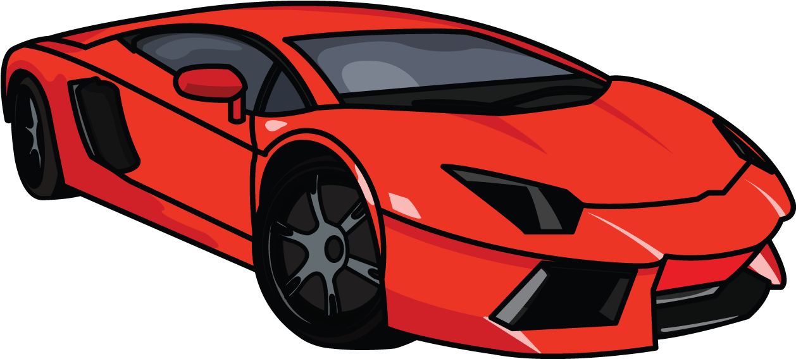
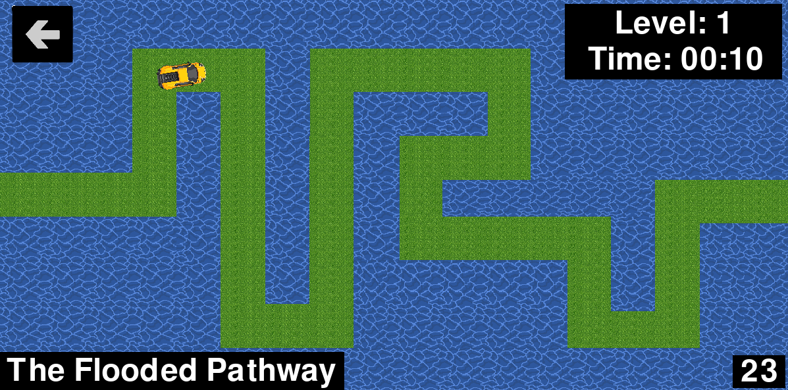
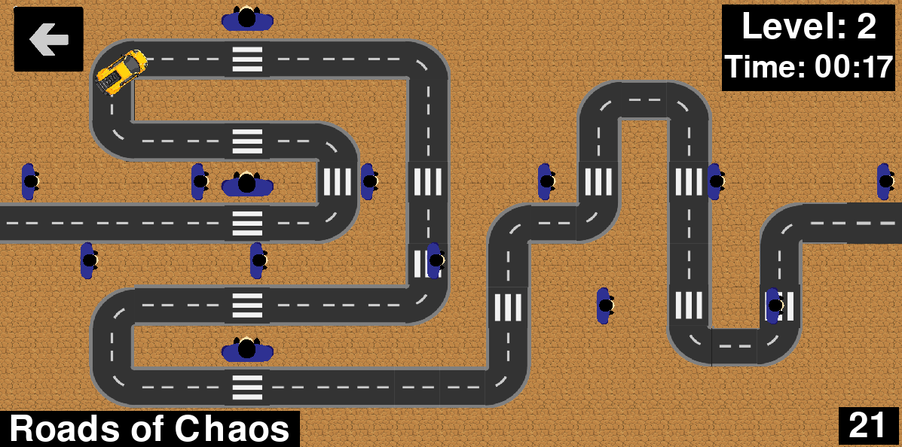
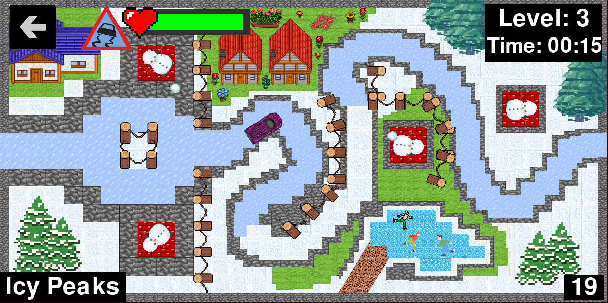
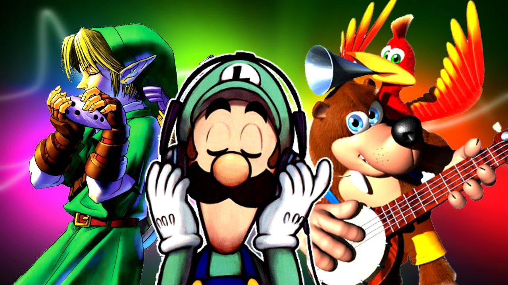
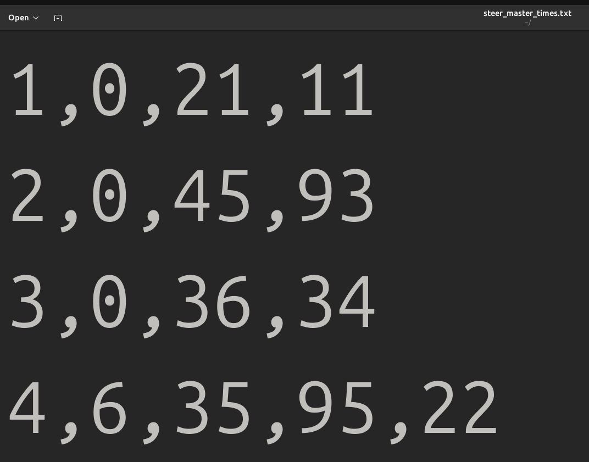

Steermaster
Github Repository

Levels

Level 1: The Flooded Pathway

Level 2: Roads of Chaos

Level 3: Icy Peaks
Menus
Main Menu buttons
Levels button
Extra Feautures
Music

Menu song:
The Flooded Pathway:
Roads of Chaos:
Icy Peaks
Level Completed Screens
Cheats
Sound effects

Featured Audios
Times saved on a .txt file
